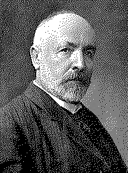

| годы жизни | 1845–1918 |
| страна | Германия · Россия (родился в Петербурге) |
| область | теория множеств · математическая логика |
| главное | доказал что бесконечностей много · диагональный метод |
| цена | травля коллег · депрессия · санатории · смерть в клинике |
Человек который нашёл разные бесконечности.
в 1874 году Кантор задал вопрос которого до него не существовало.
В 1874 году Георг Кантор задал вопрос которого математики до него не считали вопросом: «все ли бесконечности одинаковы?» Ответ: нет. Бесконечностей бесконечно много. И некоторые больше других.
Кантор доказал что натуральных чисел столько же сколько рациональных. Оба множества счётны — их элементы можно пронумеровать. Но вещественных чисел больше. Несчётно больше. Их нельзя пронумеровать.
Диагональный метод1 — один из самых красивых в математике. Предположим что все вещественные числа от 0 до 1 пронумерованы. Построим число: его n-я цифра отличается от n-й цифры n-го числа в списке. Это число не совпадает ни с одним числом в списке. Противоречие. Значит, пронумеровать нельзя.
Коллеги встретили это враждебно. Кронекер — влиятельный берлинский математик — называл Кантора «развратителем молодёжи» и «ренегатом». Пуанкаре называл теорию множеств «болезнью». Кантор пытался получить позицию в Берлине — Кронекер блокировал.
Кантор ввёл ℵ (алеф)3 — первую букву еврейского алфавита — для обозначения мощностей бесконечных множеств. ℵ₀ — мощность счётного множества (натуральные числа). c — мощность континуума (вещественные числа). c > ℵ₀. Это доказано.
«Суть математики в её свободе.» — Георг Кантор
Континуум-гипотеза: нет множества мощности строго между ℵ₀ и c. Кантор не смог её доказать. Это его мучило. В 1940 году Гёдель доказал что её нельзя опровергнуть в ZFC. В 1963 году Коэн доказал что её нельзя доказать2. Континуум-гипотеза независима от ZFC. Кантор не мог знать что вопрос неразрешим.
Последние 20 лет жизни Кантор проводил в психиатрических клиниках. Депрессия. Мания. Периоды прояснения — и снова срывы. Умер в санатории Галле в 1918 году.
Сегодня теория множеств — фундамент всей математики. Бурбаки строили математику на ней. Гёдель работал внутри неё. ZFC — аксиоматика которую придумали чтобы сделать идеи Кантора строгими.
«Суть математики в её свободе» — написал Кантор. Он был прав. Математика свободна исследовать даже бесконечность. Это стоило ему рассудка.